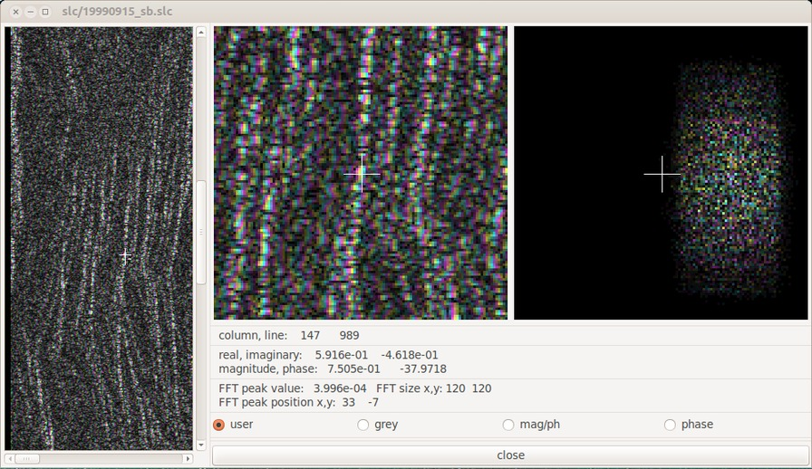

ANSI-C program: pre_rc.c
NAMEpre_rc - Prefilter, decimation and range compression of complex IQ SAR raw data
SYNOPSIS
pre_rc <SAR_par> <PROC_par> <raw_data>
<rc_data> [prefilt_dec] [loff] [nl] [nr_samp [kaiser]
[filt_lm] [nr_ext] [fr_ext] [pre_ext] [post_ext] [RFI_filt]
[RFI_thres] [fc_offset] [win_bw]
| <SAR_par> | (input) MSP SAR Sensor Parameter file |
| <PROC_par> | (input) MSP Processing Parameter File |
| <raw_data> | (input) uncompressed raw SAR signal data file |
| <rc_data> | (output) prefiltered range compressed data file |
| [prefilt_dec] | prefilter decimation factor (default from PROC_par) |
| [loff] | number of lines offset (enter - for default from PROC_par) |
| [nl] | number of lines filter/range compress (enter - for default from PROC_par) |
| [nr_samp] | number of range samples (enter - for default from PROC_par) |
| [kaiser] | range chirp Kaiser window parameter beta (enter - for default: 2.120) |
| [filt_lm] | filter length multiplier (enter - for default filt_lm: 8) |
| [nr_ext]; | near range swath extension in samples (default from PROC_par) |
| [fr_ext] | near range swath extension in samples (default from PROC_par) |
| [pre_ext] |
pre-azimuth data extension
in echoes (enter - for default from
PROC_par) |
| [post_ext] |
post-azimuth data
extension in echoes (enter - for default from
PROC_par) |
| [RFI_filt] | RFI suppression filtering (enter - for default): 0: OFF (default) 1: ON |
| [RFI_thres] | RFI detection threshold, nominal range 1.1-->1.5 (enter - for default: 1.5) |
| [fc_offset] | offset of the center of the chirp window as a fraction of the chirp bandwidth, range -0.5 to 0.5 (enter - for default: 0.0) |
| [win_bw] | chirp window bandwidth as a fraction of chirp bandwidth, range: 0.0 to 1.0 (enter - for default: 1.0) |
EXAMPLE
pre_rc ERS2_ESA.par p19960421.slc.par 19960421.raw
19960421.rc
range compress ERS data using default chirp parameters, presum factor is 1, kaiser window parameter is 2.120.
pre_rc raw/ERS2_ESA.par raw/p19990915.slc.par
raw/19990915.fix /tmp/19990915.rc3 - - - - - - - - - - 0 - -0.25
.5
Range compress ERS data setting the chirp center frequency offs
.25*chirp_bandwidth relative to the carrier frequency for
split-band analysis. The bandwidth of the filter is set to 1/2 of
the chirp bandwidth.
DESCRIPTION
This program reads input raw SAR data and applies a matched
filter to the data in range (range compression). This step
recovers the full range resolution inherent in the range chirp
bandwidth by compressing all the energy distributed over the
chirp duration into as narrow a time window as possible
consistent with window function weighting used in processing. In
this implementation the range chirp is weighted by a Kaiser
Bessel window to supress range sidelobes.
This program has the option to perform decimation in azimuth (pre-filtering) by applying a bandpass filter followed by sub-sampling. This is useful for survey mode processing to generate a "quick-look" image and for processing of airborne data where oversampling has occurred. Any integer decimation factor can be specified, but typical values are between 2 and 32. The filter is implemented with as a time-domain FIR filter. The number of taps in the finite impulse response filter determines how closely the azimuth filter approximates an ideal response. Since the Doppler centroid varies in the cross-track direction, somewhat better results may be obtained by range compressing the entire data set followed by applying the azimuth bandpass filter and decimation rather than filtering prior to range compression. The program prefilt performs azimuth filtering and decimation on the range compressed data set.
pre_rc has the capability to extend the processed image swath beyond the region of full resolution. The nominal number of samples in the range compressed data is the number of echo samples processed minus the number of samples in the range chirp. Outside of the nominal full resolution swath are two bands, one in the near range and the other in the far range. Both of these bands are as wide as the range chirp width in samples. Across these bands the resolution degrades linearly starting at the full resolution and going to zero. These regions also fade in intensity proportional to the loss in resolution due to the decreasing number of echo samples for these image pixels. The user can specify the swath extension for both the near and far range in the processing parameter file or via the command line parameters nr_ext and fr_ext .
pre_rc has the ability to insert blank data lines at the start and end of the range-compressed file to permit azimuth aperture extension. If azimuth aperture extension is applied, there will be gradual loss of resolution and amplitude in azimuth at the image edges. Typically extension by 1/3 the synthetic aperture (3000 lines for PALSAR, 600 lines for ERS) works works quite well without significant loss of resolution or amplitude. The extension is expressed as a number of echoes for the parameters pre_ext and post_ext.
pre_rc has the option for radio-frequency interference filtering. This is generally not required for C-Band sensors, but L-Band sensors (PALSAR) can greatly benefit for some scenes. The theoretical chirp spectrum is calculated and used as a model to detect RFI. Notch filtering is applied to those frequency channels where the ratio of the power spectrum relative to the nominal chirp spectrum exceeds the threshold specified by the RFI_thres command line parameter. As a greater fraction of the of the spectrum is notched out, the range sidelobes of bright targets increases.
It is also possible with pre_rc to generate a range compressed image using only a portion of the range-chirp bandwidth. Two parameters (fc_offset and win_bw) have been added to the command line that control the bandwidth and frequency offset of a time-domain window applied to the chirp waveform samples. Given a chirp duration T, the number of samples in the chirp is given by fs*T where fs is the ADC sampling rate of the system. In the case of ERS, the ADC sampling rate is 18.96247 MHz and the pulse duration is 37.12 microseconds. Consequently the number of samples in the chirp waveform is 704. The nominal chirp bandwidth BW is 15.55 MHz. Because the transmitter waveform is a linear FM chirp, a time domain filter of the chirp acts like a bandpass filter in the frequency domain. The fc_offset parameter specifies the offset of the chirp filter window as a fraction of the chirp bandwidth and can vary in the range from -0.5 to +0.5. This is translated to a number of samples in the chirp using the FM slope of the chirp waveform beta = BW/T. An fc_offset of 0.25 is equivalent to approximately .25 * fs * BW/beta = 176 samples. Similarly the width of the window applied to the chirp can be specified by the win_bw parameter as a fraction of the chirp bandwidth:
To offset the center frequency of the chirp by 1/4 of the
chirp bandwidth set the value of the fc_offset command line
parameter to 0.25. To specify that the subband has a
bandwidth equal to 3/8 the chirp bandwidth, set the value of
win_bw to
0.375:
pre_rc raw/ERS2_ESA.par raw/p19990915.slc.par
raw/19990915.fix /tmp/19990915_sb1.rc 1 - - - - - - - - - 0
- 0.25 .375 #upper range chirp subband
pre_rc raw/ERS2_ESA.par raw/p19990915.slc.par raw/19990915.fix
/tmp/19990915_sb2.rc 1 - - - - - - - - - 0 - -0.25 .375
#lower range chirp subband
when the chirp window parameters are specified, pre_rc displays additional information about the chirp window on the screen:
*** Chirp Window Bandpass Filter ***
chirp frequency offset relative to carrier frequency as fraction
of the chirp bandwidth: 0.250 offset (Hz):
3.887500e+06
chirp filter window bandwidth as a fraction of the chirp
bandwidth: 0.375 bandwidth (Hz): 5.831250e+06
chirp ADC sampling frequency (Hz): 1.896247e+07
chirp bandwidth (Hz): 1.555000e+07
chirp window width (samples): 263.958
chirp length (samples): 704 703.887
chirp window offset (samples): 175.972
chirp window start and end indices: 396 660
The range spectrum of the range compressed data or SLC can then be displayed using the program dismph_fft as shown below:
This type of range sub-band processing may be useful in detection of ionospheric phase shifts. See:
Rosen, P, S. Hensley, and C.Chen, "Measurement and Mitigation of the Ionosphere in L-band Interferometric SAR Data," presented at IEEE Radar Conference, Pasadena, CA, pp. 1459-1463, 2010.
SEE ALSO Users Guide, typedef_MSP.h, Sensor parameter file, MSP Processing Parameter File, prefilt